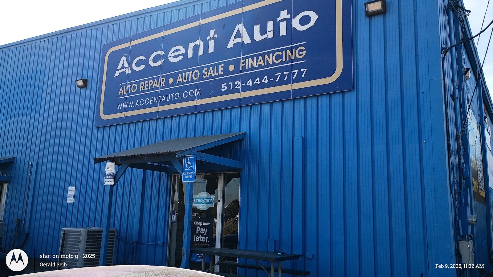

01
Brakes and inspection
Brake jobs that come with a thorough look over the whole car and a report with pictures.
- Brake inspection
- Brake repair
- Inspection report with photos

Auto repair · East Ben White, Austin
Family-owned on East Ben White since 2006. No upselling. Fair pricing. Photo reports.
Foreign and domestic, from BMW and Porsche to Tesla. A steady crew. No repairs you do not need.
What we work on
Repairs, maintenance and warranty paperwork under one roof at 4749 E Ben White.
01
Brake jobs that come with a thorough look over the whole car and a report with pictures.

02
Quick diagnosis on foreign and domestic cars, then the right parts for the repair.

03
Keeping the car on schedule so small things stay small.
At the shop


In their words
4.5
297 Google reviews
The owner and shop manager of Accent Auto are great to work with!! They have a solid crew of mechanics they've employed for years. They go over and beyond to earn your trust and keep you coming back. They are exceptionally knowledgeable about both foreign and domestic make and model cars.
Car broke down while visiting daughter for the week up in Austin. What I thought was a simple overheating problem due to thermostat, was actually a crack radiator, leaking water pump among other problems. I dropped off vehicle late Thursday afternoon and received my vehicle back Monday, enough time to drive back 5 hour's home. The mechanics did a wonderful job with the vehicle.
We recently had the opportunity to work with Accent regarding our mothers vehicle. We got an estimate to repair several items that we questioned. We addressed it with them and they were outstanding about working with us. They were able to justify the work they quoted and back it up with acceptable reasoning. I worked as a mechanic in a prior life and am well educated in this area.

The shop
Accent Auto has been a family-owned and locally operated shop in Austin since 2006. The team works on BMW, Porsche, Tesla, Cadillac, Maserati, Fiat and all domestic vehicles.
A steady crew of mechanics, an owner and shop manager you can talk to, and a clean shop.
Appointments are typically required. Work is delivered when promised.
Find us
4749 E Ben White Blvd Ste A, Austin, TX 78741
Look for the blue building with the Accent Auto sign. Appointments are typically required.